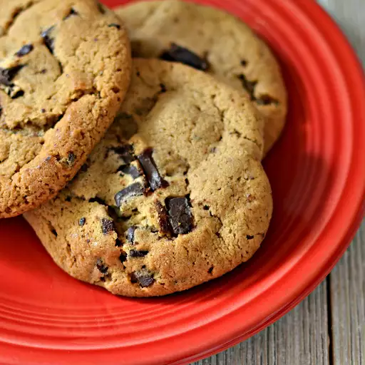

Chocolate Chip Cookies

Description
Chocolate chip cookies are a classic American dessert made with a dough that includes chocolate chips, flour, sugar, butter, and eggs. They are typically soft and chewy with a slightly crispy edge.
Ingredients
- 2 1/4 cups all-purpose flour
- 1 teaspoon baking soda
- 1 teaspoon salt
- 1 cup unsalted butter, softened
- 3/4 cup granulated sugar
- 3/4 cup packed brown sugar
- 1 teaspoon vanilla extract
- 2 large eggs
- 2 cups semisweet chocolate chips
- 1 cup chopped nuts (optional)
- 1/2 cup powdered sugar, for dusting (optional)
- 1/2 cup caramel sauce, for drizzling (optional)
- 1/2 cup sea salt, for sprinkling (optional)
- 1/2 cup coconut flakes, for garnish (optional)
- 1/2 cup peanut butter chips, for added flavor (optional)
- 1/2 cup toffee bits, for added crunch (optional)
- 1/2 cup mini chocolate chips, for extra chocolatey goodness (optional)
- 1/2 cup crushed pretzels, for a sweet and salty twist (optional)
- 1/2 cup M&M's, for a colorful touch (optional)
- 1/2 cup sprinkles, for a fun and festive look (optional)
- 1/2 cup crushed Oreos, for a cookies and cream flavor (optional)
- 1/2 cup crushed graham crackers, for a s'mores flavor (optional)
- 1/2 cup chocolate syrup, for drizzling (optional)
- 1/2 cup whipped cream, for serving (optional)
- 1/2 cup ice cream, for serving (optional)
- 1/2 cup caramel ice cream topping, for serving (optional)
- 1/2 cup chocolate ice cream topping, for serving (optional)
- 1/2 cup whipped topping, for serving (optional)
Instructions
- Preheat the oven to 375°F (190°C).
- In a small bowl, whisk together the flour, baking soda, and salt. Set aside.
- In a large mixing bowl, cream together the softened butter, granulated sugar, brown sugar, and vanilla extract until smooth.
- Add the eggs one at a time, mixing well after each addition.
- Gradually add the flour mixture to the wet ingredients, mixing until just combined.
- Fold in the chocolate chips and nuts (if using).
- Drop rounded tablespoons of dough onto ungreased baking sheets, spacing them about 2 inches apart.
- Bake for 9-11 minutes or until golden brown around the edges but still soft in the center.
- Remove from the oven and let cool on the baking sheets for a few minutes before transferring to wire racks to cool completely.
- Serve warm or store in an airtight container for up to a week.
- Enjoy your delicious chocolate chip cookies!
Home